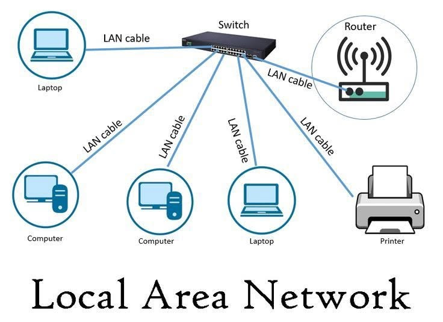
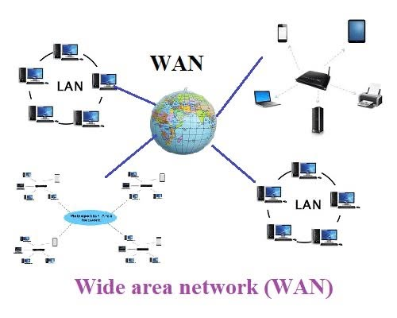
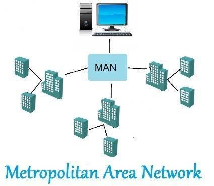

A LAN (Local Area Network) connects computers and devices within a very small, specific area like a single home, school, or office building. It uses physical cables or local Wi-Fi to link these gadgets together privately and securely. Because the distance between devices is so short, data can move back and forth at very high speeds. A common example is your home setup connecting your phone, laptop, and wireless printer to one router. Ultimately, it allows local devices to easily share files and communicate without needing the wider internet.

A WAN (Wide Area Network) spans massive geographic distances, connecting computers and smaller networks across countries, continents, or the entire globe. It links separate LANs and MANs together using long-distance telephone lines, microwave towers, satellite links, and undersea fiber-optic cables. The absolute biggest and most famous example of a WAN in existence is the global internet itself. Because data has to travel across such vast spaces, it is managed by major telecommunication companies rather than a single owner. Ultimately, a WAN breaks down physical borders to make worldwide digital communication possible.

A MAN (Metropolitan Area Network) covers a much larger physical space than a LAN, usually spanning an entire town or city. It acts as a middle-ground network that connects multiple smaller LANs together across public streets or city blocks. You often see MANs used by local government offices, public libraries, or city-wide cable and internet providers. They allow different buildings in the same urban area to share massive amounts of information quickly and securely. In short, a MAN functions like a high-speed digital highway running across an entire city.